Отвращение к естественным наукам
Святитель Лука (в миру Валентин Феликсович Войно-Ясенецкий) родился 27 апреля 1877 года в Керчи и происходил из древнего, но обедневшего дворянского рода.
«Мой отец был католиком, — писал святитель Лука, — он всегда ходил в костел и подолгу молился дома. Отец был человеком удивительно чистой души, ни в ком не видел дурного, всем доверял».
Феликс Станиславович, тихий по натуре, взглядов своих не навязывал, и атмосферу в доме определяла мать. Мария Дмитриевна воспитывалась в православных традициях, и вера ее выражалась главным образом в делах — она регулярно посылала заключенным домашнюю выпечку, а когда началась первая мировая война, в доме постоянно кипятилось молоко для раненых.
«Мать усердно молилась дома, но в церковь, по-видимому, не ходила. Причиной этого было ее возмущение жадностью и ссорами священников, происходившими на ее глазах». Кроме Валентина, в семье было еще двое сыновей и две дочери.
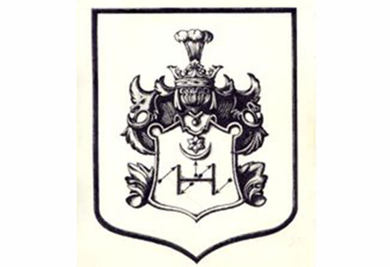
В конце 80-х годов Войно-Ясенецкие переехали в Киев. Здесь Валентин окончил гимназию и параллельно Киевское художественное училище. Увлечение живописью было так сильно, что будущий святитель решил поступать в Петербургскую Академию художеств. Но передумал: желание делать что-то для других, а не для себя только, победило.
Будущий святитель закончил художественное училище в Киеве. «Странник», набросок композиции
В Киеве Валентин размышляет о богословских и философских вопросах, каждый день ездит в Киево-Печерскую Лавру и страстно увлекается этическим учением Льва Толстого. Он спит на полу, а летом, уезжая на дачу, косит траву вместе с крестьянами.
Однако вскоре в руки Валентина попала книга Льва Толстого «В чем моя вера?», резко оттолкнувшая его издевательством над Православием.
Портрет старшего брата Владимира Феликсовича Войно-Ясенецкого, написанный самим будущим cвятителем
Валентин уже тогда много читал Евангелие. Особенно поразили его слова Спасителя: Жатвы много, а делателей мало. «У меня буквально дрогнуло сердце, я молча воскликнул: “О Господи! Неужели у Тебя мало делателей?!”, Через много лет, когда Господь призвал меня делателем на ниву Свою, я был уверен, что этот евангельский текст был первым призывом Божиим на служение Ему», – писал он.
Валентин продолжает искать и думать: хочет стать сельским учителем, но, по совету умного друга, в 1898 году поступает на медицинский факультет Киевского университета, несмотря на отвращение к естественным наукам.
Учение шло с трудом: «У меня было почти физическое ощущение, что я насильно заставляю мозг работать над тем, что ему чуждо», и тем не менее учился он на одни пятерки и неожиданно для себя увлекся анатомией. Государственные экзамены будущий хирург сдал блестяще.
Земский доктор, отец семейства
Валентин Феликсович Войно-Ясенецкий – земский врач; Москва, фото 1910 года
Оканчивая университет осенью 1903 года, Валентин хотел стать земским доктором. Кроме того, он приводил больных домой, и, по воспоминаниям сестры, их квартира превратилась в глазной лазарет. Больные лежали в комнатах, как в палатах, Валентин Феликсович лечил их, а его мама их кормила.
С началом русско-японской войны молодой врач в составе медицинского отряда Красного Креста выехал на Дальний Восток. Ему поручили заведовать одним из хирургических отделений, и он, не имея специальной подготовки, сразу стал делать много сложных операций.
В Чите он женился на сестре милосердия Анне Васильевне Ланской, дочери управляющего поместьем на Украине.
Вскоре после свадьбы молодые переехали в Курскую губернию. Молодой хирург занимался наукой и много оперировал. Слава о докторе была такой, что на прием к нему шли больные из соседней губернии.
Но Валентину с семьей пришлось уехать: он был уволен со службы, поскольку отказался прекратить прием и немедленно явиться к заболевшему исправнику: все пациенты всегда были для него равны.
В 1909 году будущий святитель поселился в Москве и приступил к работе над диссертацией о местной анестезии. В те годы крайне несовершенный общий наркоз бывал «несравненно опаснее самой операции».
После нескольких месяцев исследовательской работы в московском Институте топографической анатомии ученый сделал ряд открытий в сфере регионарной анестезии.
Он много работал и писал о себе: «Я по обыкновению не знаю меры в работе и уже сильно переутомился. А работа предстоит большая: для диссертации надо изучить французский язык и прочитать около пятисот работ на французском и немецком языках. Кроме того, много работать придется над докторскими экзаменами».
Сестра милосердия Анна Васильевна Ланская – будущая супруга Валентина Феликсовича. Они познакомились в Киевском медицинском госпитале Красного Креста, куда поступил на работу молодой выпускник медицинского факультета Киевского университета. Венчание состоялось в 1904 году, в Чите, где в Русско-Японскую войну находился госпиталь Красного Креста, в котором оба трудились
В 1915 году в Петрограде вышла его блестяще иллюстрированная книга «Регионарная анестезия». За эту работу Варшавский университет присудил Валентину Феликсовичу премию имени Хойнацкого, которую обычно получали ученые, прокладывавшие новые пути в медицине. В 1916 году Валентин Феликсович становится доктором медицины.
Занимался ученый и другим разделом медицины: «Я поставил своей задачей глубокое самостоятельное изучения диагностики и терапии гнойных заболеваний…
В то время у Валентина Феликсовича и в мыслях не было становиться священнослужителем.
В начале 1917 года Анна Васильевна заболела туберкулезом, и семья переехала в Ташкент, где Валентину Феликсовичу предложили должность главного врача городской больницы. Там он организовал хирургическое отделение.
«Время было тревожное, — вспоминал врач Л. В. Ошанин. — В 1917 — 1920 годах в городе было темно. На улицах по ночам постоянно стреляли… раненых привозили в больницу… Случалось, что Войно-Ясенецкого ночью вызывали на дом к больному, или в другую больницу на консультацию, или для неотложной операции. Он тотчас отправлялся в небезопасные путешествия… Никогда не было на его лице выражения досады, недовольства, что его беспокоят по пустякам (с точки зрения опытного хирурга). Наоборот, чувствовалась полная готовность помочь.
Я ни разу не видел его гневным, вспылившим или просто раздраженным. Он всегда говорил спокойно, негромко, неторопливо, глуховатым голосом, никогда его не повышая. Это не значит, что он был равнодушен — многое его возмущало, но он никогда не выходил из себя».
Жена Валентина Феликсовича Анна Васильевна Войно-Ясенецкая (Ланская) с первым сыном Валентином
Вскоре стало совсем плохо с продуктами. Из больничной кухни начали приносить обед — тухлую квашеную капусту в мутной воде. Лечили больную лучшие доктора города, поддерживая ее не только лекарствами, но и усиленным питанием, однако приносимые тайком от Валентина Феликсовича продукты она раздавала детям, а сама довольствовалась капустной похлебкой.
Окончательно подорвал ее здоровье арест мужа по клеветническому доносу. «Чрезвычайная тройка» на разбор каждого дела тратила не больше трех минут, практически всех приговаривая к расстрелу. Приговор исполнялся прямо за дверью.
Валентин Феликсович просидел в ожидании «суда» сутки, оставаясь совершенно невозмутимым. На тревожные вопросы коллеги: «Почему нас не вызывают? Что это может означать?» — отвечал: «Вызовут, когда придет время, сидите спокойно». Поздно вечером знаменитого хирурга узнал видный партиец, и их отпустили.
Земский врач Войно-Ясенецкий (слева) проводит операцию в хирургическом отделении городской больницы; Ташкент, 1917 год
Вернувшись в отделение, главный врач распорядился подготовить больного к очередной операции и в обычный час встал к операционному столу, как будто ничего не случилось.
После этого Анна Васильевна уже не вставала с постели. «Она горела в лихорадке, совсем потеряла сон и очень мучилась. Последние двенадцать ночей я сидел у ее смертного одра, а днем работал в больнице», – вспоминал владыка. Умерла она в конце октября 1919 года, тридцати восьми лет.
Священство
Сидят: епископ Ташкентский и Туркестанский Иннокентий (Пустынский) и недавно рукоположенный священник Валентин Войно-Ясенецкий, профессор Туркестанского Государственного Университета, 1921 год
После смерти жены Валентин Феликсович стал «активным мирянином», посещал заседания ташкентского церковного братства и богословские собрания, нередко выступал с беседами на темы Священного Писания.
«У меня никогда не было и мысли о священстве, но слова преосвященного Иннокентия я принял как Божий призыв устами архиерея и, ни минуты не размышляя, ответил: «Хорошо, владыко! Буду священником, если это угодно Богу!»
Вопрос о рукоположении был решен так быстро, что будущему пастырю даже не успели сшить подрясник. В ближайшее воскресенье доктор был посвящен в сан диакона, а через неделю, в праздник Сретения Господня 1921 года, рукоположен во иерея.
София Сергеевна Белецкая, медицинская сестра городской больницы Ташкента с приемными детьми – после кончины матери дети Валентина Феликсовича и Анны Васильевны жили у неё
За детьми, по просьбе Валентина Феликсовича, стала присматривать операционная сестра София Сергеевна. Она была «настоящей сестрой милосердия старой выучки». В операционной ее ценили за мастерство и скромность: ни слова лишнего, она сходу угадывала, какой инструмент потребует хирург в следующее мгновение.
София Сергеевна с радостью согласилась заменить детям умершую мать. «Троих младших детей она очень любила, и особенно самый младший, Валя, не слезал с ее колен. Со старшим, Михаилом, было непросто. София Сергеевна скончалась в доме Валентина Валентиновича Войно-Ясенецкого, дожив до глубокой старости.
Служение в Церкви о. Валентину пришлось совмещать с заведованием кафедрой топографической анатомии и оперативной хирургии на медицинском факультете только что открывшегося в Ташкенте университета (знаменитый хирург был одним из инициаторов его открытия).
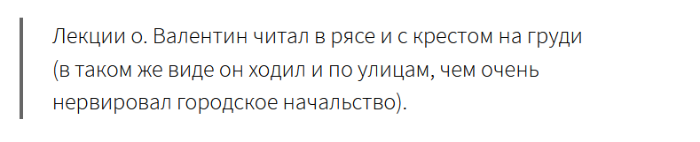
Принятие профессором сана произвело сенсацию в городе и было принято в штыки всеми его сотрудниками. Некоторые из них демонстративно продолжали называть его по имени- отчеству. Студентки дерзали «обличать» хирурга-священника, а он только снисходительно улыбался в ответ.
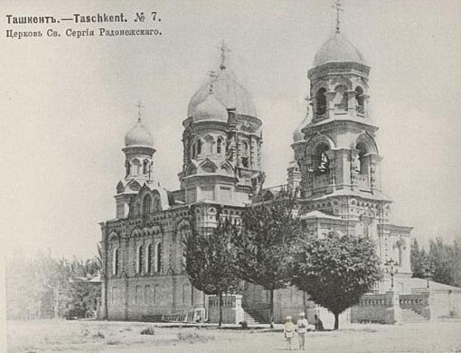
Кафедральный собор прп. Сергия Радонежского в Ташкенте, где служил епископ Лука с 1920 по 1923 год. После всенощного бдения 10 июля 1923 года епископ был арестован и отправлен во вторую ссылку
«Конечно, они не могли понять и оценить моего поступка, ибо сами были далеки от религии. Что поняли бы они, если бы я им сказал, что при виде кощунственных карнавалов и издевательств над Господом нашим Иисусом Христом мое сердце громко кричало: «Не могу молчать!» И я чувствовал, что мой долг — защищать проповедью оскорбляемого Спасителя нашего и восхвалять Его безмерное милосердие к роду человеческому».
Не имея духовного образования, молодой священник спешно изучал богословие по книгам и очень скоро составил себе порядочную библиотеку.
Святейший Патриарх Тихон, узнав о том, что профессор Войно-Ясенецкий стал священником, благословил его продолжать заниматься хирургией, и он по-прежнему «широко оперировал каждый день и даже по ночам в больнице».
Поп-профессор выступает на суде
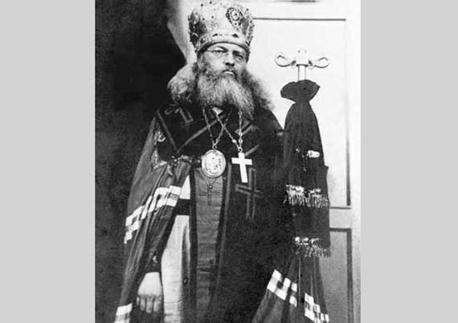
Лука (Войно-Ясенецкий) в служебном архиерейском облачении. Нареченный епископом Барнаульским, викарием Томской епархии, в силу сложившихся обстоятельств он был вынужден возглавить Туркестанскую епархию, 1923 год
Летом 1921 года ташкентская ЧК решила устроить показательный суд над врачами, якобы занимавшимися вредительством. В качестве эксперта был вызван профессор Войно-Ясенецкий. Его ответы привели чекистов в бешенство, и ему стали задавать вопросы, уже не связанные с «делом врачей»:
— Скажите, поп и профессор Ясенецкий-Войно, как это вы ночью молитесь, а днем людей режете?
— Я режу людей для их спасения, а во имя чего режете людей вы, гражданин общественный обвинитель?
— Как это вы верите в Бога? Разве вы Его видели, своего Бога?
— Бога я действительно не видел, но я много оперировал на мозге и, открывая черепную коробку, никогда не видел там также и ума. И совести там тоже не находил.
Задуманный спектакль с треском провалился, и освобожденные вскоре врачи говорили, что от расстрела их спасло только выступление знаменитого хирурга.
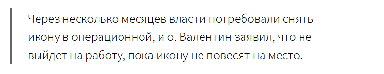
Даже неверующие коллеги уважали профессора-священника за твердость. Медсестра ташкентской больницы вспоминала:
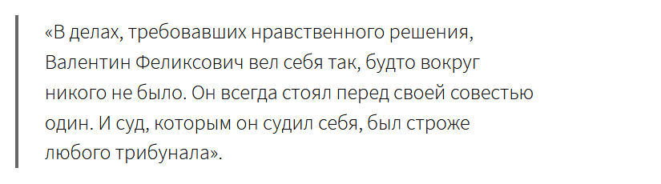
Вскоре о. Валентина назначили настоятелем собора и возвели в сан протоиерея. После этого епископ Уфимский Андрей (князь Ухтомский) тайно постриг его в монашество. «Он… хотел дать мне имя целителя Пантелеимона, но когда побывал на литургии, совершенной мною, и услышал мою проповедь, то нашел, что мне гораздо более подходит имя апостола-евангелиста, врача и иконописца Луки». В 1931 году была совершена хиротония во епископа.
Арест, тюрьма, первая ссылка
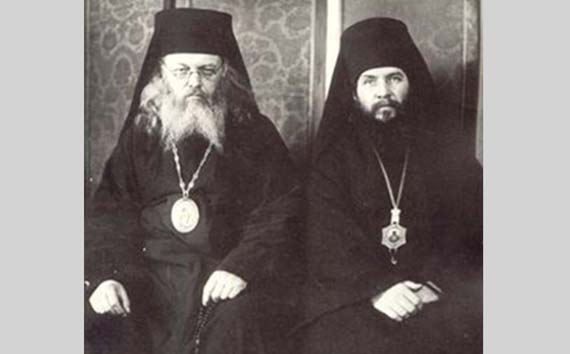
Епископ Лука и один из участвовавших в его хиротонии во епископа Барнаульского. После спровоцированного ОГПУ удаления епископа Иннокентия с Туркестанской кафедры, владыке Луке предстояло сплотить вокруг себя священников – сторонников Патриарха Тихона
Через неделю владыку арестовали. Арест сопровождался травлей в газетах.
В тюрьме святитель закончил первый выпуск своих «Очерков гнойной хирургии» — начальник тюремного отделения разрешил ему по вечерам работать в своем кабинете.
— так сбылось его давнее предчувствие об этой книге.
В тюремной библиотеке владыке удалось достать Евангелие на немецком языке, и он усердно читал его. От Е.П. Пешковой, жены Максима Горького, заключенные получили тулупчики, и святитель отдал свой полураздетому жулику. Это произвело огромное впечатление на уголовников, и их вожак, матерый вор, каждый раз, когда епископ Лука проходил мимо их камеры, любезно приветствовал его и называл батюшкой.
В 1923 году епископа Луку отправили в ссылку в Енисейск. По просьбе заведующего местной больницей владыка много оперировал, а также вел большой прием у себя на дому. Особенную сенсацию произвела экстракция врожденной катаракты трем слепым мальчикам-братьям, которые стали зрячими.
Местные жители долго помнили епископа-хирурга:
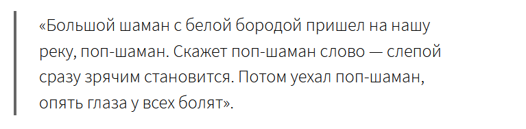
Фельдшеры, катастрофически терявшие заработок, стали жаловаться властям на «попа», который производит «безответственные» операции. Однажды его вызвали в ГПУ. Едва он, как всегда в рясе и с крестом, переступил порог, чекист закричал:
— Кто это вам позволил заниматься практикой?
— Я не занимаюсь практикой в том смысле, какой вы вкладываете в это слово. Я не беру денег у больных. А отказать больным, уж извините, не имею права.
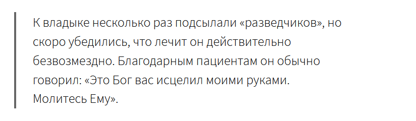
Вскоре на медицинскую деятельность епископа Луки стали смотреть более снисходительно.
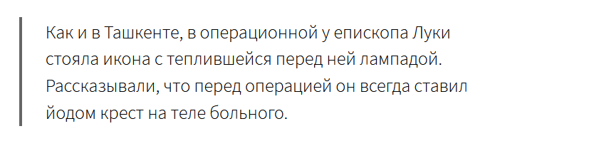
Через некоторое время святителю объявили, что его немедленно высылают дальше на север, что было равносильно преднамеренному убийству: в разгар зимы, которая в этот год (1924/25) выдалась особенно жестокой, отправить на открытых санях за полторы тысячи верст человека, не имеющего теплой одежды, значило обречь его на неизбежную гибель.
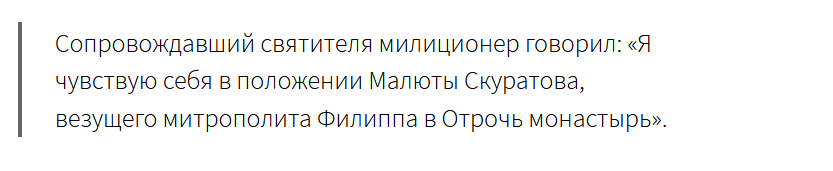
На первой остановке ссыльные социал-революционеры, долго беседовавшие с епископом, снабдили его деньгами и меховым одеялом, которое ему очень пригодилось.
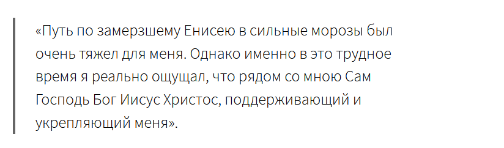
Поселили владыку в станке Плахино, далеко за полярным кругом, где в морозы птицы мерзли на лету и камнем падали на землю. Жители (их было всего пять семей) радушно приняли ссыльного и обещали заботиться о нем.
Ему отвели половину избы с двумя окнами, в которых снаружи вместо вторых рам были приморожены плоские льдины. К утру в доме стоял такой мороз, что вода в ведре покрывалась толстым слоем льда.
В середине лета исповедник Христов получил извещение Божие о скором возвращении из ссылки, но все оставалось по-прежнему. «Я впал в уныние и однажды в алтаре зимней церкви… со слезами молился пред запрестольным образом Господа Иисуса Христа.
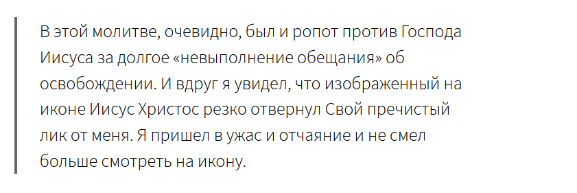
Как побитый пес, пошел я из алтаря в летнюю церковь, где на клиросе увидел книгу Апостол. Я машинально открыл ее и стал читать первое, что попалось на глаза. К большой скорби моей, я не запомнил текста, который прочел, но этот текст произвел на меня прямо-таки чудесное действие. Я вернулся в алтарь и с радостью увидел, глядя на запрестольный образ, что Господь Иисус опять смотрит на меня благодатным и светлым взором».
Через три месяца владыку по болезни вынуждены были отпустить в Красноярск. Тяжкий путь по Енисею был поистине архиерейским: на всех остановках, где были церкви, епископа встречали колокольным звоном, он служил молебны и проповедовал. Приходили благодарить и исцеленные им больные.
Владыке разрешили жить в Ташкенте. По дороге на вокзал его экипаж неожиданно остановил молодой милиционер, вскочил на подножку и стал обнимать и целовать владыку. «Это был тот самый милиционер, который вез меня из Туруханска в станок Плахино, за 230 верст к северу от Полярного круга, и говорил, что он – как Малюта Скуратов».